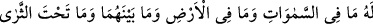
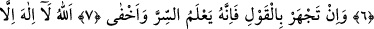
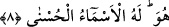
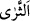
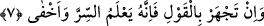
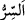

ALLAH TEÂLÂ
GİZLİNİN GİZLİSİNİ DE BİLİR
6. Göklerde, yerde ve ikisi arasında bulunan her şey ve toprağın altında olanlar
hep O’nundur.
7. Eğer sen, sözü açıktan söylersen, bilesin ki o, gizliyi de gizlinin gizlisini de bilir.
8. Allah kendisinden başka ilâh olmayandır. En güzel isimler O’na mahsustur.
“Göklerde, yerde ve ikisi arasında bulunan her şey” bunlar ister yer ve göğün bir
parçası, ister onların içine giren şeylerden olsun, hepsi Allâh’a âiddir. Hava ve bulut
gibi dâimâ; kuşlar ve benzerleri gibi çoğu zaman havada bulunan şeyler, sadece ve
sadece Allâh’ındır. Tasarruf, öldürme, diriltme, yaratma ve yok etme hususunda O’nun
ortağı yoktur. “Ve toprağın altında olanlar hep O’nundur.” “__WORD__ el-Kâmûs’a göre yaş
toprak ve yeryüzü mânâlarına gelir. Âyette bu kelimeyi her iki anlamda almak
mümkündür. Çünkü yeryüzü kuru, altı ise yaştır.
7. Eğer sen, sözü açıktan söylersen, bilesin ki o, gizliyi de gizlinin gizlisini de bilir.
“Eğer sen, sözü açıktan söylersen,” Allâh’ı zikri ve O’na duâyı açıktan yaparsan, bil
ki Allah senin açıktan ve alenen yapmandan müstağnîdir. “Bilesin ki O, gizliyi de
gizlinin gizlisini de bilir.” ‘Falanca fakirlere ihsanda bulunur’ dendiğinde şimdiki
zaman veya gelecek zamanda iyilikte bulunur mânâsından ziyade, o kimsenin devamlı
olarak ihsanda bulunduğu mânâsı anlaşılır. Aynı şekilde “O, gizliyi de gizlinin gizlisini
de bilir” sözü de O’nun ilminin zamandan münezzeh olduğuna işârettir. Nitekim o
mekândan da tamamen münezzehtir. Bizim görüşümüze göre değişiklik ilimde değil
bilinendedir.
“__WORD__ gizlenen şey demektir. “Ahfâ” kelimesinin nekre gelmesi gizlilikteki fazlalığı
göstermek içindir. Yâni Allah sizin başkalarına gizlice söylediklerinizi ve bundan daha
da ileri olarak hiç ağzınıza almadığınız halde hatırınıza getirdiğiniz ve kendi içinizde
gizlediğiniz şeyleri bilir. Bundan daha da gizli olarak gelecekte gizleyeceğin, yâni